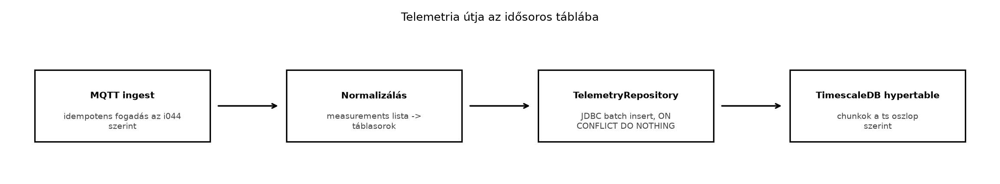

A ts-backend az Ingest: MQTT-ből a backendbe, idempotensen alfejezetben már beérkező üzenetenként feldolgozza a TerraSense telemetriát, de ez önmagában kevés: a méréseket úgy kell tárolni, hogy a későbbi lekérdezések ne lassuljanak le a több millió soros tábla növekedésével. Egy hagyományos PostgreSQL-tábla eleinte működik, de az idő szerinti szűrés, az óránkénti átlag, a percenként beérkező ezres írási sebesség és a hosszú megőrzési idő hamar szétfeszíti a naiv megoldást. Az üvegházakban elhelyezett szenzorok folyamatosan küldenek adatot; ha a rendszer nem skálázódik, a dashboard lassú lesz, a riasztások késnek, és a tárolási költség megnő.
Ez az alfejezet azt mutatja be, hogyan tervezzük meg a TerraSense mérések idősoros tábláit, hogy a TimescaleDB hatékonyan kezelje az írásintenzív terhelést, az időablakos lekérdezéseket és az eszközönkénti utolsó értékeket.
Definíció. Az idősoros adat olyan rekord, amelyben minden sorhoz egy időbélyeg tartozik, és a lekérdezések dominánsan időintervallumokra, sorrendre, csúcsértékre vagy aggregált értékre vonatkoznak. Az IoT-mérések tipikus idősoros adatok: a hőmérsékletet, páratartalmat és talajnedvességet időpontonként rögzítjük, és a kérdés gyakran az, hogy „mi volt az átlaghőmérséklet az elmúlt 24 órában” vagy „mikor lépte át utoljára a 30 °C-ot”.
Definíció. A TimescaleDB a PostgreSQL egy kiterjesztése, amely egy hagyományos táblából ún. hypertable-t hoz létre. A hypertable-t a TimescaleDB automatikusan kisebb, idő szerint particionált részekre (chunk) bontja, miközben a felhasználó továbbra is szabványos SQL-lekérdezéseket ír. A particionálás gyorsítja az időablakos szűrést, a tömörítést és a későbbi adatmegőrzési műveleteket.
A TimescaleDB-ben a hypertable-t jellemzően az eseményidő oszlopra
hozzuk létre. A ts oszlop tehát nem csak egy mező, hanem a
tárolás elsődleges szerveződési tengelye. A beérkező üzenetek az
append-only jelleget követik: ritkán frissítünk, gyakran szúrunk be, a
múltbeli adatot inkább tömörítjük vagy ritkítjuk.
A TerraSense telemetria a Adatformátumok: JSON,
CBOR, Protocol Buffers, SenML alfejezetben véglegesített séma
szerint egy measurements listát tartalmaz. Egyetlen
MQTT-üzenet tehát több mérést is hozhat:
{
"schema_version": "1.0",
"node_id": "n001",
"seq": 42,
"ts": 1735689600000,
"measurements": [
{"type": "temperature", "value": 22.5, "unit": "Cel", "valid": true},
{"type": "humidity", "value": 60.2, "unit": "%RH", "valid": true},
{"type": "soil_moisture", "value": 35.0, "unit": "%", "valid": true}
]
}Ebből a normalizálás három táblasort készít. A ts értéke
epoch ms UTC, amit az adatbázisban timestamptz típusra
alakítunk. Emellett tároljuk a server_ts feldolgozási időt
is, hogy később vizsgálható legyen a hálózati késleltetés vagy a gateway
offline pufferelésének hatása.

Az ábrán látható folyamatban a TelemetryRepository
kötegelt beszúrást használ: nem soronként, hanem néhány száz elemű
batch-ekben ír, így csökken a hálózati és tranzakciós overhead.
Az idősoros tároló kiválasztásakor a TerraSense esetében a TimescaleDB mellett az InfluxDB a leggyakrabban felmerülő alternatíva.
| Szempont | TimescaleDB | InfluxDB |
|---|---|---|
| Adatmodell | PostgreSQL-táblák, SQL | saját adatmodell, bucket/measurement/tag/field |
| Lekérdezési nyelv | SQL, PostgreSQL-ökoszisztéma | InfluxQL vagy Flux (verziófüggő) |
| Tranzakciók | teljes ACID a PostgreSQL miatt | korlátozottabb |
| Üzemeltetés | meglévő PostgreSQL-ismeret előny | külön motor, saját működtetés |
| Skálázás | vertikális + kiterjesztések, chunkok | elosztott klaszterezés lehetősége |
| Integráció | Spring JDBC/JPA egyszerű | saját kliens vagy API |
A TerraSense-ben a TimescaleDB-t választjuk, mert a ts-backend Java/Spring környezetben amúgy is PostgreSQL felé integrál, a csapat ismeri az SQL-t, és a TimescaleDB a mérési adatok mellett az eszköznyilvántartást is ugyanabban az adatbázisban tarthatja. Az InfluxDB erős versenyző, ha nagy elosztott klaszterre vagy speciális idősoros funkciókra van szükség, de jelen üvegházas méretben a bevált PostgreSQL-alap a fontosabb. A pontos verzió- és funkcióösszevetést a telepített TimescaleDB- és InfluxDB-verzió dokumentációjában ellenőrizni kell.
Az adatmodell tervezésénél két fő forma van:
temperature, humidity,
soil_moisture). Előnye, hogy egy sor egy időpontot ír le,
és a lekérdezés egyszerű. Hátránya, hogy új szenzortípus esetén
sémamódosítás kell, és a hiányzó mérések NULL-okat szülnek.measurement_type és
egy value oszlop van, minden mérés egy sor. Előnye a
rugalmasság és az idősoros indexelés hatékonysága. Hátránya, hogy egy
eszköz időpillanatnyi állapotának összeállítása több sor egyesítését
igényli.A TerraSense a hosszú táblát választja, mert a telemetria JSON eleve
mérési listát tartalmaz, és a jövőben új mérések (például
széndioxid-koncentráció) séma-módosítás nélkül illeszthetők be. A
site és node_id címkeként (label), a
measurement_type és value pedig mérésként
(metric) viselkedik.
A tábla definíciója a labor schema.sql fájljában:
CREATE EXTENSION IF NOT EXISTS timescaledb;
CREATE TABLE telemetry (
server_ts timestamptz NOT NULL DEFAULT now(),
ts timestamptz NOT NULL,
site text NOT NULL,
node_id text NOT NULL,
seq bigint NOT NULL,
boot_id text,
schema_version text NOT NULL,
measurement_type text NOT NULL,
value double precision NOT NULL,
unit text,
valid boolean NOT NULL DEFAULT true,
UNIQUE (node_id, seq, measurement_type, ts)
);
SELECT create_hypertable('telemetry', 'ts',
chunk_time_interval => interval '7 days');
CREATE INDEX ON telemetry (node_id, ts DESC);Továbbvitt eredmény. Ez a telemetry
táblaszerkezet, a (node_id, seq, measurement_type, ts)
egyedi kulcs és a hypertable particionálás a Megőrzés, ritkítás és tárolási költség alapját
adja. Ugyanezt a táblát használja a Dashboardok
Grafanával a grafikonok mögötti lekérdezésekhez, és a Záróprojekt: a teljes TerraSense rendszer összeállítása
és átvétele a végleges adatrétegként.
Az egyedi kényszer biztosítja az idempotens beszúrást: ha ugyanaz a
(node_id, seq, measurement_type, ts) négyes ismét
beérkezik, az ON CONFLICT DO NOTHING eldobja a
duplikátumot. A boot_id segít az eszköz újraindulásakor a
sorrend elemzésében; a ts bevonása az egyedi kulcsba azért
fontos, mert a seq az újraindulás után nulláról indulhat, a
ts viszont monotonabb viselkedést mutat az
eseményidőben.
A beszúrást a Spring JdbcTemplate kötegelt API-jával
végezzük:
public class TelemetryRepository {
private final JdbcTemplate jdbc;
public TelemetryRepository(JdbcTemplate jdbc) {
this.jdbc = jdbc;
}
public void insertBatch(List<TelemetryRow> rows) {
String sql = """
INSERT INTO telemetry
(server_ts, ts, site, node_id, seq, boot_id,
schema_version, measurement_type, value, unit, valid)
VALUES (now(), ?, ?, ?, ?, ?, ?, ?, ?, ?, ?)
ON CONFLICT (node_id, seq, measurement_type, ts) DO NOTHING
""";
jdbc.batchUpdate(sql, rows, 500, (ps, row) -> {
ps.setTimestamp(1,
Timestamp.from(Instant.ofEpochMilli(row.tsEpochMs())));
ps.setString(2, row.site());
ps.setString(3, row.nodeId());
ps.setLong(4, row.seq());
if (row.bootId() == null) {
ps.setNull(5, Types.VARCHAR);
} else {
ps.setString(5, row.bootId());
}
ps.setString(6, row.schemaVersion());
ps.setString(7, row.measurementType());
ps.setDouble(8, row.value());
ps.setString(9, row.unit());
ps.setBoolean(10, row.valid());
});
}
}A batchUpdate 500 soronként fűz ki egy adagot, és a
JDBC-driver általában ezt egyetlen round-tripben küldi. A
TelemetryRow egy rekord típus a normalizált mezőkkel.
A fenti konkrét JSON-üzenetből a repository három sort hoz létre, például:
| node_id | seq | ts | measurement_type | value |
|---|---|---|---|---|
| n001 | 42 | 2025-01-01 00:00:00+00 | temperature | 22.5 |
| n001 | 42 | 2025-01-01 00:00:00+00 | humidity | 60.2 |
| n001 | 42 | 2025-01-01 00:00:00+00 | soil_moisture | 35.0 |
Az időbélyeg 1735689600000 ms, ami
2025-01-01T00:00:00Z-nek felel meg.
Munkakönyvtár:
mkdir -p ~/iot-labor/i045 && cd ~/iot-labor/i045Előfeltétel: a Ingest: MQTT-ből a backendbe, idempotensen laborban elkészített ingest és a Adatformátumok: JSON, CBOR, Protocol Buffers, SenML alfejezetben elfogadott telemetria-séma.
Először bővítsük a közös ~/iot-labor/stack/compose.yaml
fájlt a TimescaleDB szolgáltatással. A services: alá
illesszük a következőket:
lab-timescaledb:
image: timescale/timescaledb:latest-pg16
container_name: lab-timescaledb
environment:
POSTGRES_USER: terra
POSTGRES_PASSWORD: lab-password
POSTGRES_DB: terrasense
ports:
- "5432:5432"
volumes:
- lab-timescaledb-data:/var/lib/postgresql/data
healthcheck:
test: ["CMD-SHELL", "pg_isready -U terra -d terrasense"]
interval: 10s
timeout: 5s
retries: 5A volumes: szekcióba pedig:
lab-timescaledb-data:A jelszó kizárólag a helyi laborhoz használt, nem éles környezetbe való.
Indítsuk el a szolgáltatást:
docker compose -f ~/iot-labor/stack/compose.yaml up -d lab-timescaledbÍrjuk meg a ~/iot-labor/i045/schema.sql fájlt a fenti
tábladefinícióval, majd a ~/iot-labor/i045/seed.sql fájlt a
tesztadatokkal:
INSERT INTO telemetry
(ts, site, node_id, seq, boot_id, schema_version,
measurement_type, value, unit, valid)
VALUES
(to_timestamp(1735689600.0), 'gh1', 'n001', 42, 'boot-1', '1.0',
'temperature', 22.5, 'Cel', true),
(to_timestamp(1735689600.0), 'gh1', 'n001', 42, 'boot-1', '1.0',
'humidity', 60.2, '%RH', true),
(to_timestamp(1735689600.0), 'gh1', 'n001', 42, 'boot-1', '1.0',
'soil_moisture', 35.0, '%', true),
(to_timestamp(1735689900.0), 'gh1', 'n001', 43, 'boot-1', '1.0',
'temperature', 22.8, 'Cel', true),
(to_timestamp(1735690200.0), 'gh1', 'n001', 44, 'boot-1', '1.0',
'temperature', 23.1, 'Cel', true),
(to_timestamp(1735690500.0), 'gh1', 'n001', 45, 'boot-1', '1.0',
'temperature', 22.9, 'Cel', true);A seed.sql bejátszása után futtassuk a
~/iot-labor/i045/queries.sql lekérdezéseit:
-- 1) óránkénti átlaghőmérséklet az n001 eszközre
SELECT time_bucket('1 hour', ts) AS bucket,
round(avg(value)::numeric, 2) AS avg_temp
FROM telemetry
WHERE node_id = 'n001'
AND measurement_type = 'temperature'
GROUP BY bucket
ORDER BY bucket;
-- 2) utolsó érték minden méréstípusra, eszközönként
SELECT DISTINCT ON (node_id, measurement_type)
node_id,
measurement_type,
value,
ts
FROM telemetry
WHERE site = 'gh1'
ORDER BY node_id, measurement_type, ts DESC;
-- 3) hiányzó órás intervallumok kitöltése standard SQL-lel
WITH hourly AS (
SELECT time_bucket('1 hour', ts) AS bucket,
avg(value) AS avg_temp
FROM telemetry
WHERE node_id = 'n001'
AND measurement_type = 'temperature'
GROUP BY bucket
),
grid AS (
SELECT generate_series(
date_trunc('hour', min(bucket)),
date_trunc('hour', max(bucket)),
interval '1 hour') AS bucket
FROM hourly
)
SELECT grid.bucket, hourly.avg_temp
FROM grid
LEFT JOIN hourly USING (bucket)
ORDER BY grid.bucket;Futtassuk a szkripteket a konténerben:
docker exec -i lab-timescaledb psql -U terra -d terrasense < schema.sql
docker exec -i lab-timescaledb psql -U terra -d terrasense < seed.sql
docker exec -i lab-timescaledb psql -U terra -d terrasense < queries.sqlVárt kimenet (a harmadik lekérdezésnél rövidítve):
bucket | avg_temp
-----------------------+----------
2025-01-01 00:00:00+00 | 22.65
2025-01-01 00:05:00+00 | 22.80
...
node_id | measurement_type | value | ts
---------+------------------+-------+------------------------
n001 | humidity | 60.2 | 2025-01-01 00:00:00+00
n001 | soil_moisture | 35.0 | 2025-01-01 00:00:00+00
n001 | temperature | 22.9 | 2025-01-01 00:05:00+00A harmadik lekérdezés a hiányzó órákra NULL értéket ad,
amit a dashboard később megszakításként vagy 0-ként
jeleníthet meg.
Takarítás: a labor csak a saját konténerét és volume-át érinti:
docker compose -f ~/iot-labor/stack/compose.yaml stop lab-timescaledb
docker volume rm lab-timescaledb-dataA lab-timescaledb konténer nevét és a
lab-timescaledb-data volume-ot takaríthatjuk, más
szolgáltatást nem.
Ellenőrizzük, hogy a TimescaleDB kiterjesztés aktív, és a hypertable létrejött:
SELECT extname FROM pg_extension WHERE extname = 'timescaledb';
SELECT hypertable_name, num_chunks
FROM timescaledb_information.hypertables
WHERE hypertable_name = 'telemetry';Hibatünetek és megoldások:
| Tünet | Lehetséges ok | Javítás |
|---|---|---|
function create_hypertable does not exist |
nincs betöltve a kiterjesztés | CREATE EXTENSION IF NOT EXISTS timescaledb; |
relation "telemetry" does not exist |
a schema.sql nem futott le | futtassuk a schema.sql-t a megfelelő adatbázisban |
| duplikált sorok jelennek meg | hiányzik az ON CONFLICT a Java kódból |
adjuk hozzá az egyedi kulcsra hivatkozó ON CONFLICT
záradékot |
| lassú az idő szerinti szűrés | nincs hypertable vagy rossz az index | ellenőrizzük a create_hypertable hívást és a
ts oszlopot |
a time_bucket hibát ad |
nem TimescaleDB-környezetben fut | a lekérdezést a TimescaleDB konténerben futtassuk |
to_timestamp(1735689600000) hibás, mert a PostgreSQL az
argumentumot másodpercnek veszi. Mindig osszuk el 1000-rel, vagy a Java
oldalon már Instant.ofEpochMilli-vel alakítsuk
Timestamp-re.measurement_type oszloppal rugalmasabb és jobban
illeszkedik a TimescaleDB-hez.UNIQUE és az
ON CONFLICT DO NOTHING az idempotencia adatbázis-szintű
biztosítéka.server_ts-t használják
eseményidőként. A server_ts a beérkezés ideje, a
ts az eseményé. A gateway offline pufferelésekor a kettő
eltérhet; a mérési grafikonokat és az aggregációkat a ts
szerint kell készíteni.queries.sql fájlját egy olyan lekérdezéssel, amely az
utolsó órában a talajnedvesség maximumát adja csomópontonként.NULL helyett az előző mért értékkel tölti ki, és magyarázd
el, miért lehet ez félrevezető riasztások esetén.Az InfluxDB előnyös, ha elosztott, nagy skálázású idősoros klasztert akarunk, vagy a csapat kifejezetten a Flux/InfluxQL nyelvet preferálja. A széles tábla akkor lehet előnyös, ha minden eszköz minden mérést mindig ugyanabban az időpontban küld, és az oszlopkészlet stabil; ekkor egy sorba kerül az összes érték, és az összetartozó mérések lekérése gyorsabb.
A napi sorok száma: Az éves nyers méret: Ezért fontos a TimescaleDB tömörítése és a ritkítás, amit a Megőrzés, ritkítás és tárolási költség tárgyal.
Például:
SELECT node_id,
max(value) AS max_humidity
FROM telemetry
WHERE measurement_type = 'humidity'
AND ts >= now() - interval '1 hour'
GROUP BY node_id
ORDER BY node_id;A kitöltés standard SQL-lel:
WITH last_known AS (
SELECT DISTINCT ON (bucket)
bucket,
value
FROM (
SELECT time_bucket('1 hour', ts) AS bucket,
value,
ts
FROM telemetry
WHERE node_id = 'n001'
AND measurement_type = 'temperature'
) sub
ORDER BY bucket, ts DESC
),
grid AS (
SELECT generate_series(
date_trunc('hour', min(bucket)),
date_trunc('hour', max(bucket)),
interval '1 hour') AS bucket
FROM last_known
)
SELECT grid.bucket,
coalesce(last_known.value,
lag(last_known.value) OVER (ORDER BY grid.bucket))
AS filled_temp
FROM grid
LEFT JOIN last_known USING (bucket)
ORDER BY grid.bucket;Az előző értékkel való kitöltés alkalmas a megjelenítésre, de
riasztásoknál félrevezető lehet, mert úgy tűnik, mintha folyamatosan
érkezett volna adat. A riasztási logikának a valid jelzőt
és a hiányzó adatot külön kell kezelnie, nem pedig csendben
interpolálni.
Az alfejezet bevezette az idősoros adat tárolásának alapelveit, és a
TerraSense-hez a TimescaleDB-t választotta, mert az a PostgreSQL-re
épül, és a meglévő Spring/JDBC-környezetbe jól illeszkedik. A
telemetry tábla hosszú formát használ: minden mérés külön
sor, measurement_type és value oszlopokkal. A
create_hypertable a ts eseményidőre
particionálja a táblát, az egyedi kulcs
(node_id, seq, measurement_type, ts) pedig idempotens
beszúrást biztosít ON CONFLICT DO NOTHING-gal. A laborban
létrehoztuk a ~/iot-labor/i045/schema.sql,
seed.sql és queries.sql fájlokat, valamint a
közös compose-fájlban a lab-timescaledb szolgáltatást.
Továbbvitt eredmény. Ezt a táblaszerkezetet, indexeit
és lekérdezéseit használja a Megőrzés, ritkítás és
tárolási költség, a Dashboardok Grafanával
és a Záróprojekt: a teljes TerraSense rendszer
összeállítása és átvétele.
time_bucket,
time_bucket_gapfill — az aktuális verzióban elérhető pontos
függvénynevek és paraméterek ellenőrizendők.JdbcTemplate.batchUpdate
pontos aláírása a használt Spring Boot 3.x verzióban ellenőrizendő.timescale/timescaledb:latest-pg16 konténerkép
elérhetősége és a latest-pg16 címke frissítési politikája
ellenőrizendő a labor futtatása előtt.lab-password kizárólag helyi,
eldobható jelszó; éles rendszerben soha ne használjuk.